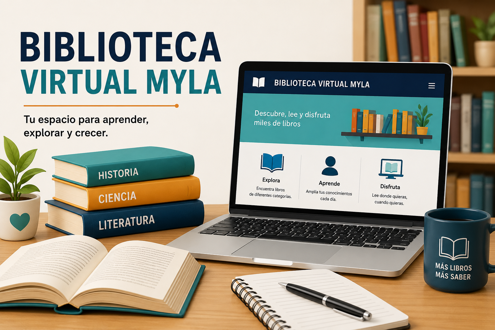

Inicio
Bienvenidos a la Biblioteca Virtual Myla, una plataforma diseñada para organizar prestamos, registros y donde encontraras los mejores libros.
Quiénes Somos
Biblioteca Virtual Myla es un proyecto creado con el objetivo de poder facilitar la administraciòn y consulta de libros mediante una plataforma web sencilla y más organizada. Nuestra Biblioteca permite registrar prestamos, almacenar información de libros y mejorar el acceso a los recursos educativos digitales. Ademas, buscamos ofrecer una mejor experiencia y que sea facil de usar para los estudiantes, los docentes y para los lectores amantes de los libros. Este proyecto tambien ayuda a fortalecer conocimientos en desarrollo web utilizando HTML5 y etiquetas semánticas para crear paginas modernas, funcionables y mucho más seguras.

Servicios
- Registro de Libros
- Préstamo de Libros
- Consulta de Autores
- Biblioteca Virtual
Contacto
Correo: bibliotecamyla@gmail.com
Teléfono: 0988556436
Dirección: Quito - Ecuador
Facebook Instagram